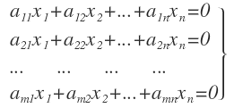

Tabla de contenidos
1. Introducción
Comenzaremos trabajando con la unidad 4: Espacios Vectoriales. Antes de meternos de lleno con alguna definición sobre esta noción queremos retomar algo del trabajo que venimos haciendo y que permite introducirnos conceptualmente en este tema.
En este libro, retomaremos el trabajo con sistemas de ecuaciones, y en especial, lo haremos con sistemas ecuaciones en los cuales cada ecuación tiene al número \( 0 \) como su término independiente.
En el siguiente libro, continuaremos con los temas de la unidad.
2. Sistemas de ecuaciones lineales homogéneos
Resuelvan el problema 6 que comienza en la página 82 y termina en la página 83 de la Guía de problemas.
Lean la definición de sistema homogéneo que aparece recuadrada en el problema 7 de la página 83 de la Guía de problemas y realicen lo que se pide en ese problema.
Una vez que los pensaron, pueden ver los siguientes videos en el que el profesor Gastón aborda una resolución de estos dos problemas:
- Video con una resolución del problema 6 de la unidad 4
- Video con una resolución del problema 7 de la unidad 4
Realicen ahora el problema 8 de la Guía de problemas.
Luego, pueden ver el siguiente video en el que el profesor Claudio aborda una resolución de ese problema:
3. Algunas propiedades de las soluciones de un sistema homogéneo
Vamos a generalizar algunas propiedades que se dan en relación con los sistemas homogéneos y sus soluciones. En el siguiente video el profesor Martín T. nos las muestra:
¿Cuáles son las propiedades que aparecen en el video?
4. Combinación lineal de vectores y dependencia lineal
Observemos las soluciones de los sistemas que aparecen en los problemas 6 y 7 de la Guía de problemas. Noten que con algunos “pocos” vectores tenemos todas las soluciones siendo éstas infinitas en algunos casos.
¿Cuántos vectores son necesarios cómo mínimo para poder tener caracterizadas a todas las soluciones de un sistema de ecuaciones lineales homogéneo? ¿Sirve cualquier vector? ¿Cómo deben ser esos vectores para que efectivamente sirvan para que con ellos podamos “armar” todas las soluciones?

Pensando en estas preguntas, vamos a ir trabajando con algunos conceptos que nos permitirán ir en búsqueda de alguna respuesta.
En el problema 14 de la página 85 de la Guía de problemas hay dos definiciones que corresponden a dos conceptos: combinación lineal de vectores y conjunto de vectores linealmente dependiente (LD).
Lean esas definiciones y realicen los problemas 15 y 16 de la pagina 85 de la Guía de problemas.
Pueden ver un abordaje de estos problemas en los siguientes dos videos de la profesora Perla:
- Video con una resolución de los problemas 15 y 16 de la unidad 4 (1ra parte)
- Video con una resolución de los problemas 15 y 16 de la unidad 4 (2da parte)
En el problema 21 de la página 86 se define conjunto de vectores linealmente independiente (LI). Lean la definición y realicen la actividad que se plantea allí.
También hagan el problema 22. Además, chequeen si alguno de los conjuntos dados en el problema 16 es linealmente independiente. Realicen las Consultas sobre estos problemas en el foro.
5. Independencia lineal de vectores (otra forma de pensarlo)
Si tenemos un conjunto de vectores con un solo vector como elemento ¿será un conjunto linealmente independiente o dependiente? ¿Nos permiten tomar esta decisión las definiciones dadas anteriormente? En el problema 25 de las páginas 86 y 87 de la Guía de problemas se presentan otras definiciones de conjunto de vectores linealmente independiente y conjunto de vectores linealmente dependiente. Además de permitirnos responder estas preguntas, estas definiciones nos permiten saber si un conjunto es linealmente independiente o linealmente dependiente de una manera más económica en el peor de los casos. En el siguiente video, el profesor Daniel nos presenta una comparación de estas definiciones y nos muestra una justificación de que (con algún ajuste) ambas definiciones son equivalentes\( \dagger \). Además, nos muestra un ejemplo de cómo hacemos para saber si unn conjunto es LI o LD usando esta segunda definición.
¿Y qué pasa con las preguntas que hicimos al comienzo de la sección anterior? Estas: ¿Cuántos vectores son necesarios cómo mínimo para poder tener caracterizadas a todas las soluciones de un sistema de ecuaciones lineales homogéneo? ¿Sirve cualquier vector? ¿Cómo deben ser esos vectores para que efectivamente sirvan para que con ellos podamos “armar” todas las soluciones?
Pueden ir pensando posibles respuestas. En el próximo libro las retomamos.
\( \dagger \)Que dos definiciones sean equivalentes significa que ambas definen el mismo objeto. Es decir, si ocurre cualquier objeto que cumpla con la primera definición también cumple con la segunda y, viceversa, cualquiera que cumple con la segunda, también cumple con la primera, entonces, ambas definiciones son equivalentes
6. Autoevaluación
Como parte de la evaluación continua les proponemos la Autoevaluación sobre sistemas homogéneos y dependencia lineal. Ingresen al cuestionario para ver la fecha de apertura y la de cierre. Esta autoevaluación involucra temas de las últimas dos semanas.
El puntaje que se obtiene en la autoevaluación solo debe tomarse como un porcentaje de resolución correcta.
Esperamos que para cuando sea el momento de realizar la autoevaluación hayan podido realizar las actividades de práctica, realizado las Consultas, leído los textos y vistos los videos.